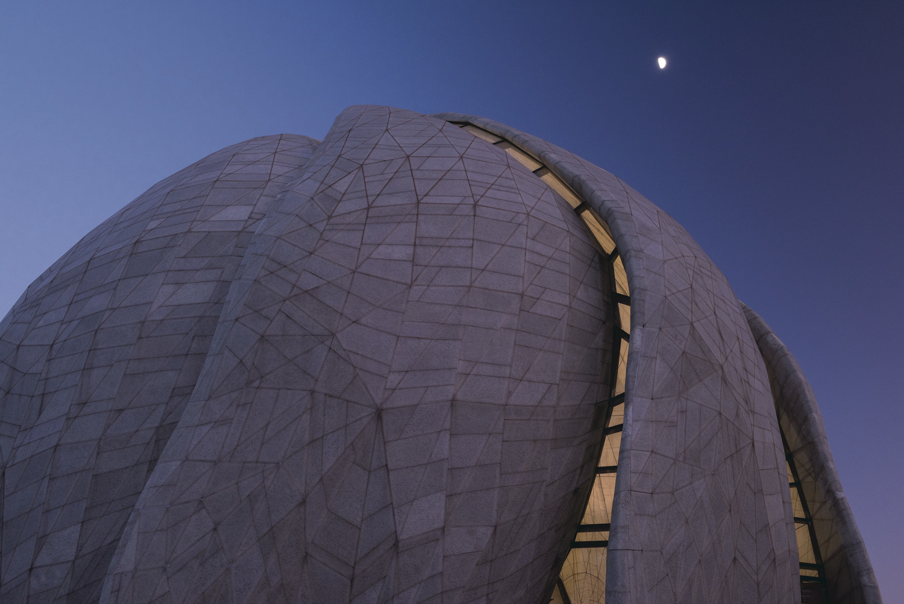

Un siervo es atraído hacia Mi en oración...
In capturing the visual and spatial qualities of the Temple through music, particularly the different effects of light, this song harnesses the interplay of two elements—melody and harmony, soloists and choir, harmonic movement and spatial movement. Each element has its own unique qualities so that when the two are sung at the same time, their interactions give rise to a new overall sound “colour.” As these individual elements shift over the course of the piece, the musical environment that is conjured up corresponds with the light of the Temple throughout the day, from sunrise to morning to midday, then afternoon, sunset and evening.
Below is a digital mock up of the first draft of the song. Use headphones for 3D sound. On the following pages are the text used in the song, the same passage that inspired the concept of the Temple, and its Spanish translation.

“‘A servant is drawn unto Me in prayer until I answer him; and when I have answered him, I become the ear wherewith he heareth....’ For thus the Master of the house hath appeared within His home, and all the pillars of the dwelling are ashine with His light. And the action and effect of the light are from the Light-Giver; so it is that all move through Him and arise by His will.” —Bahá’u’lláh, The Seven Valleys
“‘Un siervo es atraído hacia Mi en oración hasta que Yo le responda y cuando le he respondido, Me convierto en el oído con el cual oye...’ Pues, de este modo ha aparecido el Amo de la casa dentro de Su hogar y todos los pilares de la morada resplandecen con Su luz. Y la acción y el efecto de la luz vienen de Aquél Quien da luz; por ello, todos actúan por medio de Él y se levantan por Su voluntad.”
The next slides feature seven images of the Temple throughout the day that inspired the musical piece, followed by the score.
What do you hear in the music?